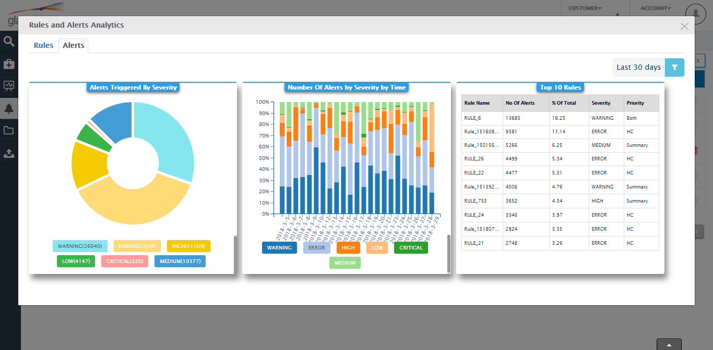
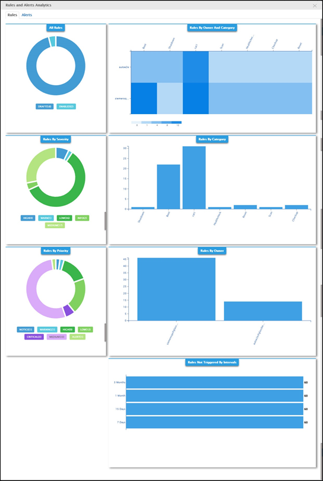
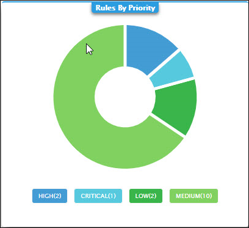
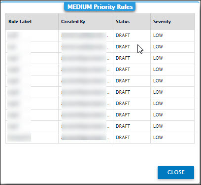
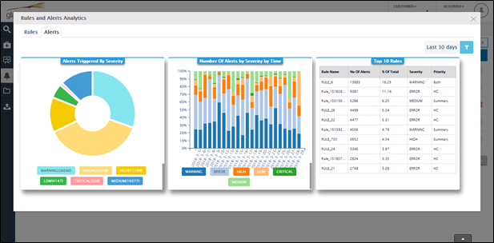

Analytics on Rules and Rule Creation Categories
In the Rules List landing page, you can now filter columns you do not want to view. Use the expand options on the left to display or hide the columns list pane. From this pane, select or clear the options to temporarily hide the columns you do not want displayed in the Rules List window. This makes it easier for you to organize the amount of information displayed in the window. Additionally, you can filter individual values from a particular column.
From the Analytics pane, you can view the trends in the rules and alerts across the entire list. Use this pane to understand many areas of your rules list. For instance, you can understand how many rules are of high priority compared to medium priority or you may want to know the number of alerts triggered by the severity level.

In the Rule tab:
Following are the different charts you can view:
- All Rules
- Rules by Owner and Category
- Rules By Severity
- Rules By Category
- Rules By Priority
- Rules By Owner
- Rules Not Triggered By Intervals

Click on each chart to view data representation in tabular format.
Example:
Consider the chart Rules By Priority.

Click on the chart on the medium priority rules representation. All the medium priority rules are displayed in the tabular format as follows:

Click on CLOSE to return to the chart.
All charts except Rules by Owner and Category are clickable and have data representation in tabular format.
In the Alerts tab:
You can currently compare these areas of the Alerts:
- Alerts triggered by severity
- Number of alerts by severity by time
- Top 10 rules
Additionally, use the filter icon to view the report on these parameters:
- Alerts in the last 30 days
- Alerts in the last 15 days
- Alerts in the 7 days
- Set a custom time interval using the Custom date Filter

Two types of rules categories exist in the Rules & Alerts app. User Created Rules – these are rules created by you and peers in your organization. Custom Rules – these are rules created by the Glassbeam Professional Services group. These rules can be customized to work for your department’s needs. You will see a short list of rules that are available to your account at the time of signing up. However, at any point, you can talk to our customer service professionals by sending us an email at support@glassbeam.com to have these rules customized for your department or according to your department’s business logic.
Use the Draft, Enabled, and Disabled sliders to filter the entire rules list. The number against each of the sliders indicates the total number of available rules for that category. For instance, the number six in the Disabled slider indicates that there are six rules currently in the Disabled stage. These sliders are helpful to filter through a large list of rules in your list. Combining the sliders with the column filter options, you can find the exact rule you are looking for matching your filter settings.
Created with the Personal Edition of HelpNDoc: Free Web Help generator